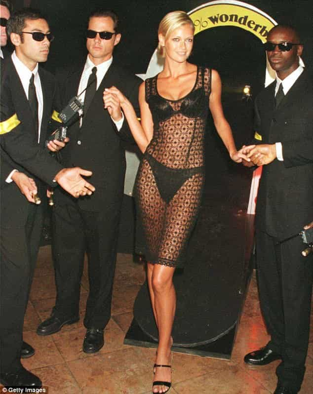
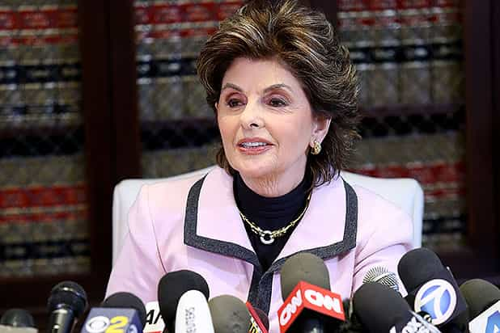

< < < Back
Bill O’Reilly’s Firing Shows That You Don’t Need Any Evidence Whatsoever To Destroy A Man – Return Of Kings
The firing of Bill O’Reilly, who for years headed cable news’ most popular show, The O’Reilly Factor, should highlight to any man that his job can quickly disappear via unsubstantiated and/or made-up accusations of sexual harassment. I am yet to see a single shred of evidence that O’Reilly has done anything sexually untoward to any women. Fox News nonetheless terminated him after advertisers in their droves pulled their money from The O’Reilly Factor.
It is ironic that liberals and SJWs have hated O’Reilly for two decades for what he has actually said and done, but what undid him were things we don’t even know happened. In fact, they almost certainly did not happen, otherwise the women accusing him would have resort to hard evidence. Only if Bill O’Reilly were some kind of superstar spy, rather than a political commentator, could he have successfully “sexually harassed” so many women, with still more now “coming forward,” without any trail.
The New York Times reported that in the years before this, Fox and O’Reilly paid a collective $13 million to five women claiming some form of sexual harassment. Considering the substantial revenues O’Reilly and his show brought to Fox, this would have been something of a pittance. It also reflects the way companies regularly operate, a situation in which settling even the most slanderous cases is the best way to minimize damage from those many would regard as extortionists.
Tellingly, almost every mainstream media organization reporting on the matter has refrained from saying O’Reilly sexually harassed the women. “Accusations” and “alleged” have been the order of the day, making the lack of considered commentary about whether he should have ever been fired all the more unusual.
Make no mistake: Bill O’Reilly was fired for being ACCUSED of sexual harassment, not because he sexually harassed anyone. Even the liberal mainstream media’s interpretations have had to accommodate this reality.
Take, for example, the first paragraph of a summary by Time:
Longtime Fox News host Bill O’Reilly will not return to the network following multiple accusations of sexual harassment against him, parent company 21st Century Fox announced Wednesday.
The Sydney Morning Herald, which falsely accused ROK of promoting rape, couldn’t even bring itself to say that O’Reilly did anything wrong:
The latest allegations come after an explosive report in The New York Times revealed Fox News’ parent company had paid settlements totalling $13 million to keep five women quiet about alleged mistreatment at the hands of O’Reilly.
I understand that Fox News was hemorrhaging money after The New York Times story broke and it needed to arrest and reverse the exodus of advertisers. But there is no evidence available, other than the claims of two sides, that Bill O’Reilly sexually harassed anyone. And because five women were paid an average of $2.6 million to settle their claims, serious questions need to be asked about the massive incentives for women to make accusations and then be paid off. It seems that these evidence-light accusations will never will be seriously tested, instead being decided in the court of public opinion, which is itself shaped by the sensationalism of a handful of liberal-leaning media outlets.
Why have the accusations leaked, but not any evidence?
How convenient that liberals don’t like O’Reilly’s close relationship with Trump. He is happy to critique The Donald when he wants to, too.
Despite the confidential settlements Bill O’Reilly and Fox News made with the five women, The New York Times became aware of them. So why then have they not become aware also of any smoking gun evidence, pieces of information that would presumably blow O’Reilly and his protestations of innocence out of the water? Well, these pieces almost certainly do not exist.
The hit job by The New York Times amounts to nothing but a scoop without the ice cream. Because of the ability of millions of people, plus many advertisers, to believe hearsay, paying some people to keep quiet is both good business practice and invariably the lesser of two bad scenarios. Resisting a lawsuit spearheaded by an ambulance-chasing lawyer in the mould of Gloria Allred can be deleterious, costing a company like Fox News tens of millions even without a payout to an accuser.
In addition, the involvement of Lachlan and James Murdoch in the firing of O’Reilly is worrying. These two middle-aged sons of billionaire Rupert Murdoch, both key players at Fox, have apparently come out on the side of political correctness. They could have instead encouraged Fox News to adhere to its purported beliefs in reason and fighting precious, self-righteous liberals’ calls for turning around the burden of proof both legally and non-legally.
The Daily Mail reports that Lachlan’s wife Sarah, best known for her role in screwing up the reading out of the winner of Australia’s Next Top Model, was pivotal in convincing her husband that O’Reilly needed to be fired. You could say that a wife is always going to have influence, for better or for worse, but if this story is true, Fox faces a very difficult future once Rupert dies and even now. Decisions like this should avoid “the feels” factor and a woman whose qualifications on the subject seem to amount to this:

Is being told some words really worth millions of dollars?

…Gloria Allred says so.
Though I have pointed to the serious problems with O’Reilly losing his job over “sexual harassment” accusations, there’s another issue of how women can be paid so much often for so little. Like you, I have been told either “unfortunate” or “bad” words over the years. I use inverted commas because much of what I hear in news stories is treated like the aftermath of a hurricane when it should really be considered under the rubric of “absolutely no big deal.” Or at least a deal not worth $x, y, or z million.
Some of this talk coming my way at work or elsewhere has been sexually suggestive. People would make sexual jokes about a range of people. But whereas I have been accused of “whoring” around with other women by two or three female coworkers, none of whom I had sex with, and could not (and did not want to) sue, other people, almost always women, are trigger-happy about litigation or new forms of HR warfare.
And why are we fencing off alleged sexual harassment from other harassment claims? I would think that someone being denied promotion, or being otherwise “discriminated” against, happens a lot more in relation to someone’s looks or personality than over sexual matters. In the end, however, all these claimed workplace and other mishaps need to compete with life-or-death situations, including industrial workers who frequently get far less for losing a limb, being confined to a wheelchair, or other serious emergencies.
Plus, the context of sexual harassment allegations matters. If (and that’s a very big if), a man makes a sexually suggestive comment, there’s a very good chance he has said it in a general conversational thread where the woman is bantering back. But later, sometimes years later, the woman can come forward and claim she was “harassed.” The problem is that if the man admits he engaged in the discussion, which O’Reilly, by the way, has vehemently denied, he is prima facie guilty.
Any office romance is a sexual harassment suit waiting to happen
As I have said, there is no evidence Bill O’Reilly did anything. What prompted his removal was a loss of advertisers, not any proof (far from it) that he harassed these women. O’Reilly’s sheer presence in political circles, having fended off many powerful haters for years, should cause every normal man to seriously consider the consequences of office and other liaisons. Like the fired newsman’s plight, even claims of an attempted workplace pick-up can torpedo a career.
Because there has been no adjudication by a court, O’Reilly’s downfall has been largely adjudicated by the same media outlets who have a vested interest in portraying Fox News as a protected space for “sexual harassers.” The idea that CNN, The Huffington Post, or other publications can handle this impartially is beyond fanciful.
And guess what? The woman accusing you, like those women accusing Bill O’Reilly, doesn’t need to prove anything. If she kicks up a big enough stink, in all likelihood you are gone. Something as “positive” for your situation as keeping your job is still a very poisoned chalice, as anything from an expected promotion to the respect of your colleagues and clients will all be in jeopardy.
Proving that men have done something wrong is now part of a bygone era. Be prepared and have a back-up plan stronger than Bill O’Reilly’s, or potentially face the same fate as him.
Read More: Sexual Harassment “Expert” Claims She Was Harassed By Military Cadets During A Conference On Harassment